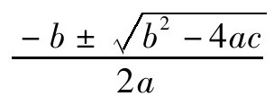

蒂莫西·高尔斯
本章标题是一个著名的问题。事实上，也许这个问题有点过于出名了：不断有人提出这个问题，但怎么作答都不能令人满意。在形成本书的讨论中，大家推举我来回答这个问题。由于大多数参与讨论的都不是研究数学的专家，因此希望我能从数学家的角度来处理这个问题。
提出这个问题的一个原因似乎是人们希望用它来支持自己的哲学观点。如果数学是一种发现的话，那便意味着原本就有某种东西在那里等待数学家去发现，这种认识似乎支持了柏拉图主义的数学观点；而如果数学是一种发明的话，那么它则为非实在论关于数学对象和数学真理的观点提供了某种论据。
但在得出这样一个结论之前，我们需要从细节上充实论据。首先，当我们说数学的某项内容被发现时，我们必须十分清楚这指的是什么，然后我们必须在这个意义上解释清楚为什么能够得出这一结论（这套程式被称为柏拉图式论证）。我自己并不认为这套做法能够贯彻到底，但它至少从一开始就试图阐明这样一个不争的事实：几乎所有数学家在成功证明某个定理时都会感到好像他们有某种发现。我们可以用非哲学的方式来看待这个问题，这里我正是尝试这么做的。例如，我会考虑是否存在某种可识别的东西，以便鉴别哪些东西看上去像是数学发现，哪些更像是数学发明。这个问题部分属于心理学范畴的问题，部分属于是否存在数学陈述的客观性的问题，即属于解释某个数学陈述是如何被感知的问题。要想论证柏拉图的观点成立，我们只需要指明存在某些被发现的数学事实就足矣：如果事实证明，存在两大类数学，那么我们或许就能够理解这种区别，对何为数学发现（而不是单纯的数学结果）做出更精确的定义。
从词源上说，所谓“发现”通常是指当我们找到了某个早已在那儿但我们此前不知道的东西。例如，哥伦布对美洲的发现（尽管人们出于其他原因对此大可质疑），霍华德·卡特于1922年发现了图坦卡蒙的墓，等等。尽管所有这些发现并非我们直接观察到的，但我们依然能够这样说。例如我们都知道是J.J.汤姆孙发现了电子。与数学关联更强的是如下事实的发现——例如我们可以确切地说，是伯恩斯坦和伍德沃德发现（或对这一发现有贡献）了尼克松与水门入室盗窃案有关。
在所有这些情形里，我们都观察到一些引起我们注意的现象或事实。因此有人可能会问，我们是否可以将“发现”定义为从未知到已知的转变过程。但有不少事例表明，事实并非如此。举例来说，喜欢做填字游戏的人都知道这样一个有趣的事实，单词“carthorse（大马）”和“orchestra（乐队）”属于一对字母换位词。我相信肯定是某个地方的某个人最先注意到这个事实，但我宁愿将它称为“观察”（我用“注意到”这个词来描述这一事实）而不是“发现”。为什么呢？这是因为“carthorse”和“orchestra”这两个词我们每天都用，它们之间是一种简单关系。但是为什么熟悉的单词间关系我们不能称之为发现呢？另一种可能的解释是，一旦这种关系被指明，我们很容易验证它的成立，我们没必要从美国跑到埃及去宣讲这一事实，也没必要通过做精密的科学实验予以验证，或设法获取某个秘密文件才能知晓。
至于谈到柏拉图式论证的证据，“发现”和“观察”的区别不是特别重要。如果你注意到某个事实，那么这个事实一定在你注意到它之前已经在那里了，同样，如果你发现了某个事实，那一定是在你发现之前它就存在了。因此我认为，观察事实属于某种发现而不是一种根本不同的现象。
那什么是发明呢？我们做的什么样的事情属于发明呢？机器是一个很好的例子：谈到蒸汽机，或飞机，或移动电话，我们说这些是发明。我们还认为游戏属于发明，例如英国人发明了板球。我更想指出的是，“发明”是以适当的方式来描述所发生的事。艺术为我们提供了这方面的一些更有趣的例子。人们从来不会说某个艺术品是被发明出来的，但会说发明了某种艺术风格或技巧。例如，毕加索不是发明了《阿维尼翁的少女》（Les Desmoiselles d’Avignon），但确实是他和布拉克发明了立体派绘画艺术。
从这些例子我们得出一种共识，我们发明的东西往往不是单个对象，而是生产某类对象的一般方法。当我们说到蒸汽机的发明时，我们不是在谈论某台特定的蒸汽机，而是一种概念——一种将蒸汽、活塞等东西巧妙地结合起来用以驱动机器的设计，它能够导致许多蒸汽机的建造。同样，板球是一套规则，它可以带来各种形式的板球运动，立体派则是一种对各种立体派绘画的一般性指称。
有人将数学发现这一事实看作柏拉图学派数学观的证据，其实他们试图表明的是，某些抽象实体具有独立存在的属性。我们认可体现这些抽象实体真实性的某些事实，与我们接受具体事物真实性的某些事实有大致相同的原因。例如，我们认为存在无穷多个素数这一陈述就是一种真实的事实，这是因为的确存在无限多的自然数，并可确信，这些自然数中确实存在无限多个素数。
有人也许认为，抽象概念是一种独立存在这一点也可以作为“数学是一种发明”这一观念的证据。确实，我们有关发明的很多例子都以某种重要方式与抽象概念相关联。前述“蒸汽机”便是这样的一个抽象概念，板球规则也是如此。绘画中的立体派是一个比较麻烦的例子，因为它没有那么精确的定义，但它无疑是具体的而不是抽象的。但我们发明这些概念时为什么不说这些抽象概念是一种存在呢？
一个原因是，我们认为独立存在的抽象概念应该是永恒的。因此，在英国人发明板球规则时，尽管这些规则属于抽象领域并成为一种存在，但我们不倾向于认为它们是永恒的。更诱人的一种观点是，他们是从巨大的“规则空间”里选择了板球规则，这个规则空间包含了所有可能的规则集（其中大部分规则会引起可怕的游戏）。这种观点的缺陷是，它用大量垃圾概念充斥了抽象领域，但实际情形也许真的是这样。例如，数空间显然包含所有的实数，但其中除了“可数的”这个子集外，其他的都无法定义。
反对“我们发明抽象概念从而使它变成存在”的另一种论证认为，我们发明的概念不是基本的，它们往往是对其他一些（抽象或具体的）更简单的对象的处理方法。例如，板球规则的描述就涉及包含22名球员、1个球和2个球门的一组概念之间的约束。从本体论的角度看，球员、球和球门显然比约束它们之间相互关系的规定更基本。
前面我提到过，谈到某一件艺术品时我们通常不会用“发明”一词来指称。当然我们也不会说“发现”了它，而是通常用“创造”这个词来指称。大多数人在被问到这个问题时都会认为，“创造”一词在这里其词意接近于“发明”而不是“发现”，正像“观察”一词的词意接近于“发现”而非“发明”。
这是为什么呢？是这样的：在这两种情况下，变得存在的那件东西原本有许多任意性。如果我们可以将时钟拨回到板球被发明出来之前，让世界重新演化一遍，我们很可能会看到发明出一种类似的游戏，但其游戏规则不太可能与板球比赛规则完全相同（有人可能会反驳说，如果物理定律是确定的，那么这个世界应当精确地按照它第一次演化时那样演化。在这种情况下，它重新演化时只会做一些小的随机变化）。同样，如果有人在毕加索刚创作完《阿维尼翁的少女》后便不小心毁坏了它，迫使毕加索不得不重新开始创作，那么他创作的可能是一幅类似但不完全相同的画。与此相反，如果没有哥伦布，那么也会有其他人发现美洲，而不是在大西洋的另一边发现的只是一块巨大的、面积大致相同的陆地。而单词“carthorse”和“orchestra”的有趣性与谁是第一个观察到这一点无关。
有了这些思想上的准备，现在我们回到数学上来。同样，我们先看一些人们常列举的著名例子将有助于我们对问题的理解。我先列举一些发现、观察和发明的事例（我无意设定这样一种场景，好像我可以确定地表示某些数学问题是创造出来的），然后尝试着解释为什么每个事例会是按这种方式来描述。
数学上几个知名的发现方面的例子是：二次方程有通解公式但五次方程则没有类似的公式；存在大魔群；存在无穷多个素数。稍微观察一下即可知，小于100的素数的个数是25；3的各次幂的最后一位数字构成序列3，9，7，1，3，9，7，1，…；数字10 001可分解为73乘以137。水平稍高一点儿的事例则有：如果你通过设z0=0，zn=z2n-1+C（对每个n﹥0）定义了一个无穷的复数序列z0，z1，z2，…则所有复数C的集合（假定序列不趋于无穷大，这个集称为曼德布罗特集）具有显著的复杂结构（我将这个例子归于中等数学水平是因为，虽然曼德布罗特和其他人几乎是由于偶然而无意中发现了它，但它已经在动力系统理论中具有根本的重要性）。
另一方面，人们常说牛顿和莱布尼茨各自独立地发明了微积分（用这个例子的过程还有点巧合。我原本考虑过这个例子。那天在我写这一段时，恰好电台在播送关于他们的优先权纠纷的节目，用的词就是“发明”）。人们有时也会谈论某些数学理论（而不是定理）的发明。说格罗滕迪克（A.Grothendieck[11]）发明了概型理论（theory of schemes），这听起来一点都不荒谬，虽然人们也可能同样会用“引入”或“发展”来描述这一理论。同样，这三个词也都被用来描述P.J.科恩（P.J.Cohen）的力迫法（forcing method），他用这一方法来证明连续统假说的独立性。[12]这里我们感兴趣的是，“发明”“引入”和“发展”这三个词都暗示了这样一点：某些一般性方法应运而生。
有可能存在争议的一个数学对象是“i”或更一般的复数系统。复数是一种发现还是一种发明？或者说，数学家通常提到复数进入数学领域时用的是“发现”类型的词还是用“发明”类型的词？如果你在Google上输入词组“复数的发明”和“复数的发现”，你会得到大致相同的点击次数（二者均在4500～5000），所以这个问题似乎没有明确答案。但这也是一个有用的数据。类似的一个例子是非欧几何，虽然“非欧几里得几何的发现”与“非欧几何的发明”的点击次数的比例约为3:1。
另一种不明确的情形是证明：证明是一种发现还是一种发明？有时候证明似乎很自然——数学家常讲，一个陈述的“（逻辑上）正确的证明（right proof）”并不意味着它是唯一正确的证明（correct proof），而只是表明它是一个能真正解释为什么这一陈述是对的证明——“发现”这个词显而易见可用于这一情形。但有时候人们谈到类似的东西时却感到下面这样的表述更恰当，譬如说，“猜想2.5在1990年首度获得证明，但在2002年，史密斯给出了一个巧妙且非常简短的证明，这一证明实际上建立了一种更一般的结果。”在这句话里，人们可以用“发现”来替代“给出（came up with）”一词，但后者更好地刻画了这样一层意思：史密斯的方法只是众多有可能提出的方法中的一种，但史密斯并不是简单地纯属偶然地找到了这种方法。
让我们来小结一下上述观点，看看数学中的哪些部分可以归结为发现、发明或不能明确用二者来描述，并能否给予解释。
非数学的例子表明，当发现者对观察对象或事实不能控制时，我们通常用“发现”和“观察”来描述这一发现过程。而当对象或程式具有许多可由发明者或设计者选择的特性时，那么我们就用“发明”或“创造”来描述这一对象或程式的诞生过程。由此我们也得出了对这两类过程的一些更精细但不那么重要的区别：“发现”往往比“观察”更重要，但较不易事后验证。而“发明”往往比“创造”更具一般性。
当我们谈论数学时，这些区别还会继续保持上述大致相同的形式吗？前面我提到二次方程解的通项公式被发现的例子。当我尝试说“二次方程解的通项公式的发明”这句话时，我发觉我不喜欢这么描述，确切的原因是，ax2+b x+c的解是数

，无论是谁最先推导出这个公式，但这一公式的最终形式是什么样子是没有任何选择余地的。当然记述公式的符号可能会有不同，但那是另一回事。我不想在此讨论两个公式“本质上相同”是什么意思，这里我只需简单地说，公式本身是一个发现，但不同的人会用不同的方式来表达它。然而当我们来考察其他的例子时，这种担心会再次出现。五次方程无通解就是另一个简单例子。它是指“五次以及高于五次的常系数代数方程没有由方程系数经有限次四则运算和开方运算确定的求根方法”[13]，对此阿贝尔也无法改变。因此，他的著名定理就是一种发现。然而，他的证明方法的具体细节可以被看作发明，因为后来有了很不相同的证明方法。这其中特别值得指出的是伽罗瓦的与此密切相关的工作，他发明了群论（“群论的发明”这句话在Google上有40 300条，相比之下，“群论的发现”只有10条）。
大魔群则是一个更有趣的例子。在费希尔（B.Fischer）和格里斯（R.L.Griess, Jr.）于1973年预言存在这种群后，它第一次进入了数学领域。但这句话意味着什么呢？如果他们根本不能给出具体的大魔群，难道就意味着它不存在吗？答案很简单：他们预言，存在一种具有特定显著特性的群（其中的一个显著特性是它元素巨多，大魔群由此得名[14]），而且这种群是唯一的。因此，说“我相信存在大魔群”只不过是“我相信存在一种具有这些惊人特性的群”这一语句的简短截说，名曰“大魔群”实际上指的是一个假设性的实体。
大魔群的存在性和唯一性的确切证明直到1982年和1990年才分别完成，在此之前我们不是很清楚是否应该把这个数学上的进展称为发现或是发明。如果我们略去其中的故事，将这17年浓缩为一瞬间，那么我们满可以这么说，大魔群一直就在那里，等待着群论数学家来发现。或许有人甚至可以添加一个小细节：早在1973年，人们就开始有理由假设它的存在，并且最终在1982年终于碰上了它。
那么这种“碰上”是怎么发生的呢？格里斯并没有用某种间接的方式证明大魔群必定存在（虽然这样的证明在数学上是可能的），而是构建了这种群。这里我像所有的数学家一样用“构建”这个词。为了构建大魔群，格里斯构建了一个辅助对象——一种现被称为格里斯代数的复杂的代数结构，并且证明了这种代数的对称性构成一种具有所需特性的群。然而，这不是获取大魔群的唯一方式，还存在能够产生具有相同属性的群的其他结构，因此从结果的唯一性来看，它们是同构的。如此看来，格里斯在建立大魔群的过程中有一定的控制权，甚至他最终想做到哪一步也是事先确定的。有趣的是，在Google上“大魔群的构造”这句话比那句“大魔群的发现”更流行（8290:9），但如果你把前一句改为“大魔群的这种构造”，那就变得不流行了（仅6条），这反映了一个事实，即大魔群有许多不同的构造。
有人可能会问的另一个问题是这样的。如果我们谈论大魔群的发现，我们是在谈论一个对象（大魔群）的发现，还是一个事实（即存在一种独特的、具有特定属性的群这一事实）的发现？当然，后一个设问对群理论家实际所做的工作是一个更好的描述，“构造”这个词在描述他们如何证明这一陈述的存在性时要比“发现”更准确。
先前列举的其他一些发现和观察事例表现得更直接，因此不赘述了。我们来看有关发明的例子。
在数学上，直接用“发明”这个词的情况多是指一般理论和技术的产生。这当然也包括微积分，但微积分不是一个对象或一个简单的事实，而是大量事实和方法的集成，如果你熟悉微积分，它将极大地提高你的数学能力。这种情形也包括科恩的力迫法技术。同样，这里也牵涉诸多定理，但我们真正感兴趣的是这一方法在证明集合论的独立表述中所表现出的一般性和普适性。
前面我提到过发明者在他们的发明过程中有一定的控制权。这也适用于这些例子：哪一种数学表述是微积分的一部分，这并没有明确的标准，同样，我们也可以有许多方法来表述力迫法原理（前面我已提到过对科恩“力迫法”原创思想的许多广义化、修改和扩展）。
复数系统又是怎样的一种情形呢？乍一看，这一点都不像一个发明。然而毕竟它被证明是唯一的（满足从a+bi到a-bi的同构），它是一个对象而不是一种理论或技术。那么为什么人们不时称它为发明，或至少是觉得称它为发现会显得不那么自然呢？
对这个问题我没有成熟的答案。我认为其中的原因在于它带来的困难有点像大魔群——人们可以“构建”不止一种复数方式。构建复数的方法之一是运用类似于历史上复数最初被构建出来的方式（我的数学史知识不是很深厚，所以我不说二者的相似性到底有多接近）。人们简单引入一个新符号，i，并宣布它的性态就像一个真正的数，不仅遵从所有通常的代数规则，并具有额外的属性，i2=-1。由此可以推断出
（a+bi）（c+di）=ac+bci+adi+bdi2=（ad-bd）+（ad+bc）i
和许多可用于建立复数理论的其他事实。第二种构建方法（以后再做介绍，它表明复数系与实数系是一致的）是用一对有序的实数（a, b）来定义复数，并规定这些有序对满足以下给出的加法和乘法规则：
（a, b）+（c, d）=（a+c, b+d）
（a, b）（c, d）=（ac-bd, ad+bc）
在建立严格数系的大学课程里，经常使用的是第二种方法。业已证明，这些有序对构成了给定的两种运算下的一个域，最后我们可以说，“从现在开始，我将写成a+bi而不是（a, b）”。
我们对复数怀有这种两可心理的另一个原因是，它们不像实数那样给人真实的感觉（这一点从这些数的命名即可细微地反映出来）。我们可以直接将实数与时间、质量、长度、温度等的数量词联系起来（虽然在此我们无须用到实数系的无限精度），就好像它们具有一种被我们观察到的独立的存在属性。但是，我们不能将这种方式运用到复数上。相反，我们进行复数运算时总感觉到有点像在做游戏——如果-1存在平方根，想象一下会发生什么。
但是为什么在这种情况下我们还是会说发明了复数呢？原因是这个游戏比我们期望的更有趣，它在数学上已经对实数甚至整数产生了巨大影响。虽然发明i只是一个小小的举动，但游戏已失去控制，我们无法预料后果。[这种情况的另一个例子是著名的康威（Conway）生命游戏。康威设计了一个遵从一些简单规则的游戏，这款游戏与其说是发现不如说是发明更确切。游戏一经开始，他便发现他实际上创造了一个充满意想不到现象的世界。其中的大多数现象在其他人看来明显可以说是发现]。
为什么“非欧几里得几何的发现”要比“非欧几里得几何的发明”更易被接受？这个问题之所以有趣，是因为我们有两种方式来看待这个主题：一个是公理性质的；另一个则具体些。将非欧几何看作重大发现的人们看到的是，不同的公理体系（在这里是平行线假设被替换为这样一种陈述——允许一条直线有几条通过任一给定点的平行线）是相容的。另一方面，我们又可以把非欧几何看作一种模型的构造。公理系统在这种模型里均成立。严格来说，要谈前一种方式我们就需要后一种方式，但如果我们从细节上探索这些公理的后果，并证明了所有有趣的定理均无矛盾，那么这些事实就会成为这种相容性的一种令人印象深刻的证据。可能是因为我们对理论相容性的兴趣大于对具体模型选择的兴趣，再加上这样一个事实——任意两个双曲平面模型等距，所以我们通常才将非欧几何称为发现。然而，欧氏几何让人（错觉地）感到要比双曲几何更“真实”，而且没有哪一种双曲几何模型看上去最自然。这两个事实可以用来解释为什么“发明”这个词有时会被用来形容非欧几何。
我的最后一个例子是关于证明的。前面我说过，证明根据其性质既可以称为发现也可以称为发明。当然，能用来指称的绝不是仅有这两个词或短语，人们可能还会用“想到”“找到”或“闪现出”等词语来形容。人们往往将证明视为对象而不是过程，侧重于要证明的东西，譬如这样的句子：“经过很长的推导，我们最终证明/建立/显示/表明了……”证明的这种特点再一次表明，当作者没有选择余地时，我们用“发现”来指称一个证明过程；如果可以有多种选择的话，就用“发明”来指称。人们可能会问，选择从何而来？这本身是一个有趣的问题，这里我仅指出这种选择和任意性的一个来源。证明通常需要我们给出存在特定的数学对象或结构（无论是主要陈述还是一些中间引理），而通常情形下问题中的这些对象或结构远非独一无二的。
在从这些例子得出结论之前，我想简要地讨论一下这个问题的另一个方面。以上我主要是从语言的角度来谈论问题，但正如我在开始时提到的那样，人们在选择用词时还有很强的心理因素在起作用：当一个人在做数学研究时，研究工作有时给人的感觉更像是发现，有时则更像是发明。这两种经验之间的区别是什么？
因为我比其他人更熟悉自己的研究经历，故我讲述一下我自己的经验。在20世纪90年代中期，我开始了一项研究。其实我很早就以这种或那种方式在琢磨这个问题。我在想，我应该能给一个定理一种比已有的两种证明方法更简单的证明。最后我找到了一种证明方法（这里我很自然地使用了这个词），尽管它不是更简单，但它给出了新的重要信息。找到这个证明的过程让人感觉到更像是发现而不是发明，因为当我接近完成这一证明时，论证结构中已包含了许多在证明开始时我甚至没有预料到的要素。此外更为明显的是，有一大堆密切相关的事实可用于一种自洽但尚未被发现的理论。（在这个阶段，它们还不是已被证明的事实，而且不总是准确陈述的事实，唯一明确的就是“有东西”值得研究。）我和其他几个人努力发展了这个理论，终于使得定理已被证明它甚至不像15年前作为猜想那样得到表述。
为什么这种感觉如同发现而不是发明？我们可以再次从它是否与可控制相联系这一点来理解。当时我没有从一大堆可能性中选择事实的余地，相反，某些陈述是以明显自然的和重要的方式呈现出来的。由于理论还在进一步发展中，因此哪些事实具有核心意义哪些属于边缘性质还不太清楚。而从这个角度看，研究过程又像是一种发明过程。
几年前我有了不同的经验。我找到了一个有关巴拿赫空间理论中一个古老猜想的反例。为此我构建了一个复杂的巴拿赫空间。在此过程中，我的感觉有时候像是在搞发明——我有任意选择的余地，许多其他反例随后被发现；有时候又如同发现——我做的很多工作都是回应问题本身提出的要求，而且感到这样做是很自然的事情。其他人也独立发现了一个非常类似的反例（甚至后续的例子中使用了类似的技术）。所以，这又是一种有待分析的复杂情形，说它复杂原因很简单，我有多大的控制权就是一个复杂的问题。
从所有这些例子中，以及从我们平时貌似自然地对待它们的情形里，我们应该得出什么样的结论呢？首先，很显然，我们最初提出的问题是相当人为的。就是说，开始时认为的所有的数学要不就是发现要不就是发明的想法是荒谬的。但是，即使我们考察了数学某个具体部分的起源，我们还是不会硬性使用“发现”或“发明”这样的语词，我们并不经常这么用。
当然，事情都有各种可能性。有些数学研究给人感觉像是发现，而另一些则更像是发明。到底哪些属于前者哪些属于后者这并不总是容易说清楚，但似乎有一点可用于鉴别：这就是研究过程中的可选择性。这一点，正如我前面所说的，甚至有助于解释为什么有些可疑的情形是值得怀疑的。
如果这是正确的（也许还有待细化），那么我们可以从中得出什么样的哲学结论呢？在开始时我提过，像“数存在吗？”或是“数学陈述之所以正确，是因为它们涉及的对象真的是以我们描述的方式相互联系着吗？”这样的问题，其答案不能从问题本身上寻找，理由是数学问题具有如下的客观特性：对它的解释取决于我们有多大的控制权。举例来说，前面我提到过，存在性陈述的证明可能远非独一无二的，原因很简单，可能有许多对象都具有所需的特性。但这只是一种简单的数学现象。你可以接受我的分析，相信问题中的对象是一种“真实的存在”；也可以将这一陈述看成其存在如同游戏中图标在纸面上移动，或是把对象看作通俗小说。事实上，数学的某些部分是不可预料的，而另一些则不同；有些的解是唯一的，另一些则有多个解；某些证明是显而易见的，而有些则需投入大量的精力。所有这些都取决于我们如何描述数学问题的产生过程，都完全独立于一个人的哲学立场。
吉迪恩·罗森
从某种意义上说，蒂莫西·高尔斯与其说是杰出的数学家，不如说是具有20世纪50年代风格的大众语言哲学家。他在本书的首篇文章——“数学是一种发现还是一种发明？”中，非常仔细地道出了数学家（以及Google数据库中不同程度被提及的芸芸众生）在涉及数学各领域研究时是如何实际运用这些词汇的。高尔斯的结论（大致）是，对于数学家在他从事的工作中难有选择余地的情形，我们倾向于用“发现”来看待这一研究过程；而当手头工作有许多方法可供选择，数学家对他所进行的研究有一定的控制力的时候，我们倾向于用“发明”或是“构建”来形容其研究过程。
高尔斯坚持认为，让他感兴趣的这种区别与一个人在数学形而上学的问题上持什么样的观点无关。
我感到这说的是没错，但它也提出了一个高尔斯没有解决的问题。高尔斯描述了数学家们倾向于说所做出的成绩可归于发现或发明的条件，以及某些成就可能被当作发现而另一些被当作会发明的条件。但我们应该如何认真看待这些语言上和心理上的观察呢？正如哲学家们常常指出的那样，营造一个我们乐于说这说那的氛围是一回事儿，而要确定一种能正确地说这说那的条件则是另一回事儿。因此，我们假定数学家们对一些研究成果划归（譬如说）为发明达成一致，但这是否就意味着，甚至暗示着，这项成果事实上就是发明，还是它不过是一种有可能是错的但被太当回事儿的说话方式？
我相信，这个问题在不同的情况下有不同的答案。正如高尔斯指出的，我们不但谈论很多东西的发明/发现：理论、定理、证明和证明技术等，而且也谈论各种各样的数学对象（数、数系）。我们会说康托尔发明了超限数理论，但我们不太可能说康托尔发明了超限数。我们先重点讨论一下发明/构建这类修辞在数学对象上的应用。在本文里，高尔斯讨论了大魔群的情形。大魔群是一种元素众多的有限群，其存在性和唯一性分别于1982年和1990年被证明。语言学证据表明，数学家们更倾向于说大魔群的“构造”而不是大魔群的“发现”，高尔斯解释了这一点。对大魔群的存在性的证明不是唯一的，我们可以有很多例子来确立其存在性定理，即具有相关性质的群是存在的，尽管（正如所发生的那样）这些例子彼此间同构。但是我们有什么理由要认真对待这种构建的意象呢？在我看来，这是这个短语按字面意义运用时所表现出的一种不可通融的性质：如果一样东西是被发明或构建出来的，那么在它被发明之前，它并不存在；如果它没有被发明，它也不会存在。相反，如果一样东西是被发现的，那么它在被发现之前必须存在（或至少独立于发现的具体细节）。但是，我觉得高尔斯会同意我这样说，在大魔群尚不存在的1982年之前，谈论大魔群的性质就显得很奇怪。如果是这么回事，那么格里斯最初问自己的问题，“大魔群是否存在？”答案应该是显而易见的：“还不存在，但也许有一天会存在。”但事实上没有人会这样来讨论数学对象。因此我倾向于认为，即使高尔斯关于我们在什么情形下倾向于采用发明或构建等词汇来指称数学对象的条件是正确的，在这方面完全从字面上理解这种语言仍将是一个错误。
另一方面，当我们谈论数学理论——尤其是像微积分这样的大的理论框架时，情况则完全不同。如果有人问（譬如说）在1650年之前是否存在一种强有力的代数方法用于计算曲线围成的面积或曲线在某个给定点的切线，或者说是否存在一种深刻的、能够证实这些技术并显示它们之间关系的理论，答案可能是：“还没有，但说不定哪天会有。”此外，如果我们这么说应该也很自然：如果没有人写下这样的理论，那么微积分就不会存在。因此，这种理论似乎与小说、诗歌和哲学论文一样，属于相同的本体论范畴。这样的事情都是抽象的作品：当某个人第一次给予具体的表现方式后，这些抽象的实体才得以存在。在这种情况下，我看不出有什么理由不认真地将发明这一修辞视为对基础形而上学的一种清楚的、字面意义上的解释。
高尔斯不主张这种解释，但我不知道他是否会同意我的如下假设：除非我们准备说，本项发明在其被发明之前不存在，否则我们就应该将数学中的发明（构建、创造等）视为隐喻。我们可以接受高尔斯对条件的解释，在这些条件下，我们倾向于将比喻看作对那些清楚的、形而上的中性真理的解释。